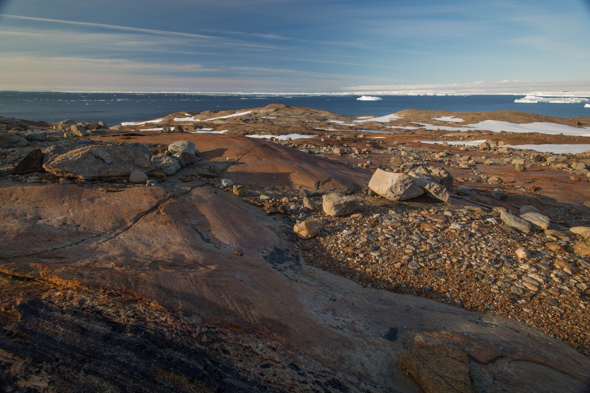

그린란드 희토류 탐사권 취득…서방 공급망 교두보 주목

캐나다에 본사를 둔 탐사 개발 기업 그린란드 마인스(Greenland Mines)가 그린란드 서부에 위치한 사파토크(Sarfartoq) 광구에 대한 공식 광물 탐사 허가권을 취득했다고 발표했다. 이 소식이 전해지자 회사 주가는 발표 당일 장중 기준으로 급등하며 시장의 기대를 반영했다.
사파토크 프로젝트는 그린란드에 현재 존재하는 희토류 개발 프로젝트 중 가장 높은 성숙도를 가진 사업 중 하나로 꼽힌다. 해당 광구에는 란타늄·세륨 등 경희토류부터 네오디뮴·프라세오디뮴 등 영구자석용 핵심 희토류까지 다양한 원소가 포함된 것으로 알려졌으며, 과거 기초 지질 조사에서 상업적 가치가 있는 매장 가능성이 확인된 바 있다.
그린란드는 지정학적으로 서방 진영의 희토류 공급망 다변화 전략에서 핵심 지역으로 부상하고 있다. 미국은 그린란드에 대한 전략적 관심을 공개적으로 표명하고 있으며, 유럽연합(EU)도 핵심광물법(CRMA)을 통해 역내 및 우방국의 희토류 개발을 적극 지원하는 정책을 추진 중이다.
희토류 전문 분석가는 '그린란드 자원은 지리적 접근성과 정치적 안정성 측면에서 서방 공급망 다변화의 최적 후보지 중 하나'라며, '사파토크 같은 사전 탐사 완료 프로젝트가 탐사 허가를 취득했다는 것은 본격 개발을 향한 의미 있는 진전'이라고 평가했다.
글로벌 희토류 공급 구조는 중국의 지배력이 압도적으로 높다. 전 세계 희토류 정제 가공의 약 85%가 중국에서 이루어지고 있어, 중국의 수출통제 정책 변화에 전 세계 공급망이 즉각적으로 영향을 받는 구조다. 이러한 취약성을 해소하기 위해 북미·유럽·오세아니아 등지에서 대안 공급망 구축이 활발히 진행되고 있다.
미국 국방부는 지난해 희토류·핵심소재 탈중국 공급망 구축에 1500억 달러 규모의 투자를 발표했으며, 그린란드를 포함한 우방국 내 자원 개발 지원에 적극 나서고 있다. 스칸듐 프로젝트에 대한 4000억 원 규모 조건부 융자도 이러한 정책의 일환이다.
한국 입장에서도 그린란드 및 북미 기반의 희토류 공급망 확대는 전략적 중요성을 갖는다. 국내 방산 기업들이 제3국을 통한 희토류 우회 조달을 확대하고 있는 상황에서, 탐사권 취득 단계부터 안정적 공급 계약을 맺는 선제 접근이 중요해지고 있다. 지질연구원과 KOTRA도 핵심광물 공급망 위기 대응 협력을 강화하는 방향으로 움직이고 있다.
희토류 시장 가격 동향은 소재별로 차별화되고 있다. 프라세오디뮴·네오디뮴(Pr-Nd)은 단기적으로 약세를 보이고 있으나 중희토류인 디스프로슘·홀뮴은 공급 불안 심리로 강보합세를 유지 중이다. 저가 물량도 부족한 상황이 지속되며 전반적으로 가격 하방이 지지되는 흐름이다.
사파토크 광구가 실제 생산 단계로 이어지기까지는 탐사·환경평가·인프라 구축 등 여러 단계가 남아 있어 상업 생산까지는 최소 7~10년이 소요될 것으로 추산된다. 그러나 탐사권 취득 자체가 투자자들에게는 프로젝트 가치를 재평가하는 계기가 됐으며, 서방의 희토류 공급망 재편 의지를 상징적으로 보여주는 사건으로 해석된다.
업계 전문가들은 '그린란드를 포함한 북극권 자원 개발이 2030년대 이후 서방의 희토류 자립도를 높이는 핵심 변수가 될 것'이라며, '지금 탐사 허가를 취득하는 기업이 미래 공급망의 핵심 플레이어로 자리잡을 가능성이 높다'고 전망했다. 관련 탐사주에 대한 투자자 관심도 당분간 높은 수준을 유지할 것으로 예상된다.